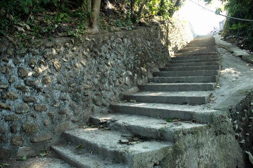
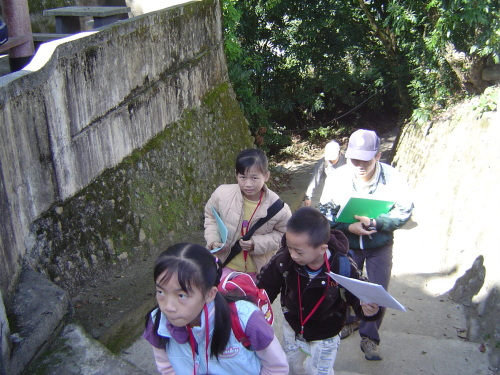

無某崎舊影「無某崎」 是巴宰台地先民往返南烘溪挑水的古道。 早期台地民生用水全仰賴溪水，上下台地路途陡峭，挑水極為辛苦。
因男人需下田耕作，挑水重擔幾乎全落在婦女肩上， 長久下來，在地男子晚婚甚至難以成家，故得名「無某崎」。
這條崎嶇之路，也造就了台地青年強健的體魄，甚至培養出「三鐵冠軍」的國手。
坡頂矗立著台地最大的 糙葉樹， 枝葉茂密，見證百年風雨，也是過往挑水人歇腳的天然涼亭。
「無某崎」下方則有一座 五福宮，祀奉水神與土地公， 守護著往來挑水的居民。廟側有一株大雀榕，與土地公廟共同成為當地的信仰中心。
如今，無某崎與五福宮仍是台地重要的文化地標，訴說著巴宰族群與水、土地相依的故事。

五福宮・雀榕無某崎 不僅是一條挑水古道，更是巴宰台地居民韌性與互助的象徵。 從「無某」的戲謔之名，到糙葉樹下的休憩、五福宮的虔誠祭拜，每一階石礫都刻著先民的汗水。 如今，這條古道與土地公廟依舊守護著台地，也讓後人記得—— 水、土地、信仰，永遠是家園的根。